soulellis.com / teaching / urgencylab
Urgency Lab
A semester-long series of workshops and experiments that juxtaposes radical acts of generosity with alternative ways of making work in relation to power, including collective action, disruption, and refusal.
Course overview, learning goals, scaffolding, studio structure, readings, calendar, etc.
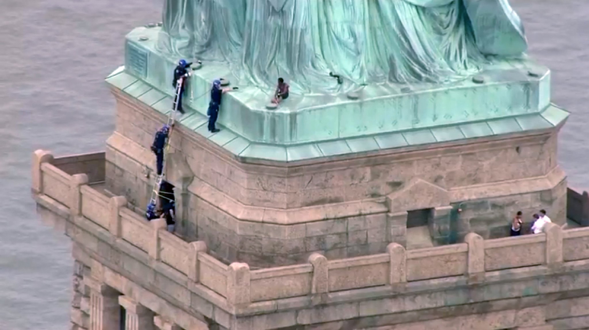
Patricia Okoumou, Statue of Liberty, July 4, 2018
Rhode Island School of Design
Spring 2019
GRAPH-2109-01
Instructor: Paul Soulellis
Location: Design Center 404
Mondays 1:10pm–6:10pm
Course overview
How do we address what’s truly urgent today? Urgent for whom? Crisis conditions have infused every aspect of culture and society with doubt, but the role and efficacy of art and design as a means for change is still debated. We’ll begin this studio course by defining what Urgency Lab is on our own terms, casting a wide view towards climate, gender, race, and oppression. Can artists and designers loosen hegemonic power? We’ll engage with a range of voices for guidance and inspiration through weekly studio visits and readings, both within and outside of art and design discourse, with a particular emphasis on queer methodologies and historically marginalized perspectives. We’ll draw upon Fred Moten and Stefano Harney’s concept of the undercommons as a way to imagine our own position within an institutional context, and as the course develops we’ll build an “urgency platform”—a network of tools, references, modalities, and scenarios—to help us speculate, imagine, and articulate a more just futurity.
What is urgent craft? The semester will be devoted to exploring how legacy art and design techniques might be subverted (altered, manipulated, destroyed) to produce new, non-normative forms. Urgency Lab will be a collaboratively designed space, so determining the studio’s criteria, scope, and output as a group will itself be an experiment in collective, peer-to-peer making as an act of resistance. Working in public, radical acts of publishing, research-based exploration, rapid prototyping, non-traditional tools and platforms, and experimentation will be encouraged.
Learning goals
— Develop collaborative strategies for transforming group dynamics into a safe space for experimental making, discourse, and critique
— Explore contemporary theories around queering, decolonizing, and other non-normative methodologies in relation to art and design, and work to interpret these ideas into the studio
— Experiment with non-normative techniques for making art and design like (but not limited to) disruption, collective action, generosity, withdrawal, failure, and refusal
— Experiment with new forms of disseminating, publishing, and distributing our work
— Experiment with radical acts of generosity inside and outside the studio space
— Explore different modes of sharing and exchanging ideas within the studio
Scaffolding
1 LOCATION / SPECULATION
2 COLLECTIVE CARE
3 URGENT CRAFT
4 POWER / EXCHANGE
5 SLOWNESS, COMPLAINT, EXHAUSTION, REFUSAL
6 CHOREOGRAPHY OF RESISTANCE
Studio structure
Let’s allow our studio to shift and morph as the semester progresses, based on your collective participation and feedback. To get started we’ll use the proposed scaffolding (as loose navigation). Studio time will be devoted to various combinations of workshops, exercises, readings, discussions, group project reviews, and other kinds of events (artist visits, field trips). I’m open to experimenting with format, new scaffolding structures, and collaboratively re-writing this syllabus as the studio progresses!
Readings
- Sara Ahmed, “Strategic Inefficiency” (2018)
- American Artist, “Failure and Markup Language: Remembering Sandra Bland,” GenderFail: An Anthology of Failure (2018)
- American Artist, Caitlin Cherry, Nora N. Khan, Sondra Perry, A Wild Ass Beyond: ApocalypseRN zine (2018)
- Sasha Costanza-Chock, “Design Justice, AI, and Escape from the Matrix of Domination” in GenderFail: An Anthology of Failure (2018)
- Laboria Cuboniks, “Xenofeminism: A Politics for Alienation” (2018)
- Demian DinéYazhi´, AN INFECTED SUNSET (2018)
- Andrea Fraser, 2016 in Museums, Money, and Politics (2018)
- Interview with Andrea Fraser and Helen Molesworth, Bomb Magazine (2018)
- Reina Gossett, Eric A. Stanley, Johanna Burton (ed), Trap Door: Trans Cultural Production and the Politics of Visibility (2018)
- Alexis Pauline Gumbs, “We Can Learn to Mother Ourselves: The Queer Survival of Black Feminism 1968–1996” (2010)
- Jack Halberstam, The Queer Art of Failure (2012)
- Nicole Killian, “What Does Queering Education Actually Look Like in Practice?” (2019)
- Lucy Lippard, “Time Capsule” (2007)
- Audre Lorde, The Master’s Tools Will Never Dismantle the Master’s House (1978)
- Audre Lorde, “A Litany for Survival” (1978)
- Fred Moten and Stefano Harney, The Undercommons: Fugitive Planning & Black Study (2013)
- Nate Pyper, I Take the Sign with Me (2018)
- Simon Sheikh, “Circulation and Withdrawal” Parts 1 & 2, e-flux (2015)
- Roseanne Somerson, “reflect on issues of gun violence by making an object, text or image” (2018)
- Astra Taylor, “Against Activism” (2016)
- McKenzie Wark, “A Billion Black Anthropocenes,” book review (2019)
- Stephen Wright, Toward a Lexicon of Usership (2013)
- yingchen & yingtong, “an aromantic manifesto” (2018)
Calendar
☃☍☃☍☃☍☃☍☃☍☃☍☃
Studio 1
February 18, 2019
LOCATION / SPECULATION
Introduction and orientation: Where are we?
Warm-up & workshop 1—1918/2118 (RISD Museum & studio)
Exercise 1 COLLECTIVE ACTION (due at studio 2)—Bring a multiple to share with the group [☆inspired by Nicole Killian’s mediums mis-use studio at VCU☆]
☃☍☃☍☃☍☃☍☃☍☃☍☃
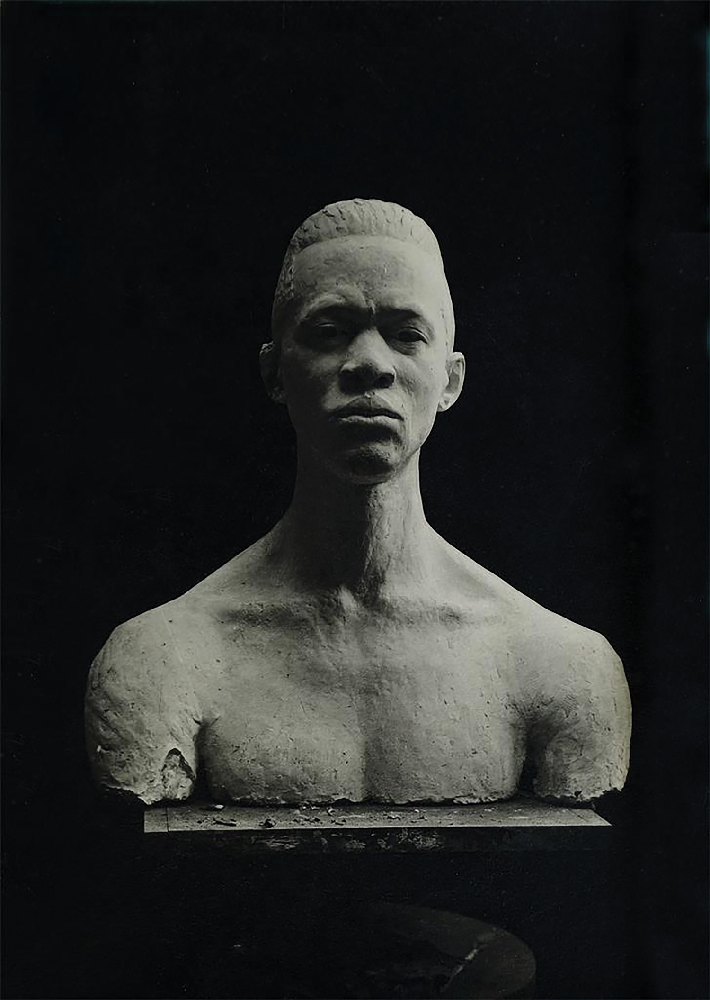
Nancy Elizabeth Prophet, photograph of a sculpture, 1923
☓∞☓∞☓∞☓∞☓∞☓∞☓∞☓∞☓
Studio 2
February 25, 2019
COLLECTIVE CARE
What do we need?
Review—exercise 1
Workshop 2—re-write our syllabus
Exercise 2 FAILURE (due at studio 3)—Prepare a response to the two readings so far (Undercommons & Queer Art of Failure) and present to the group
☓∞☓∞☓∞☓∞☓∞☓∞☓∞☓∞☓
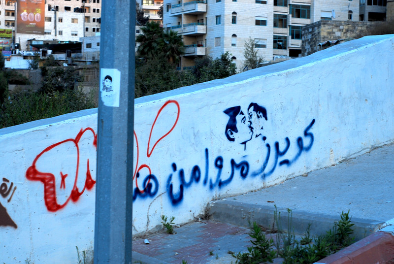
Graffiti in Ramallah: “Queers passed through here.”
☺☽☺☽☺☽☺☽☺☽☺☽☺☽☺☽☺☽☺☽☺
Studio 3
March 4, 2019
URGENT CRAFT
What is it?
Review—exercise 2
Workshop 3—towards a definition of urgency and urgent craft
Exercise 3 COMMUNITY (due at studio 4)—Perform and document an act of generosity outside the studio
☺☽☺☽☺☽☺☽☺☽☺☽☺☽☺☽☺☽☺☽☺

RAFiA, #PAYBLACKTIME, 2016–ongoing
♢⊹♢⊹♢⊹♢⊹♢⊹♢⊹♢⊹♢⊹
Studio 4
March 11, 2019
POWER / EXCHANGE
How do we even map power?
GUEST ARTIST CHAT: Autumn Knight
Review—exercise 3
Workshop 4—mapping power
Exercise 4 COLLECTIVE MAKING (due at studio 5)—In small groups, create an artifact that responds to an act of power/injustice and share with the studio; the artifact should be made by all members of the group together and should bear traces of your collective making
♢⊹♢⊹♢⊹♢⊹♢⊹♢⊹♢⊹♢⊹
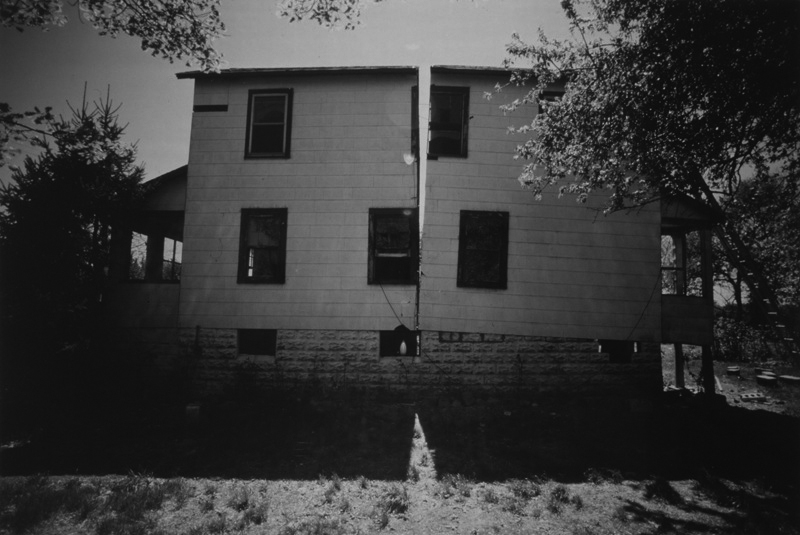
Gordon Matta-Clark, Splitting, 1974
♘♘♘♘♘♘♘♘♘♘♘♘♘
Studio 5
March 18, 2019
SLOWNESS, COMPLAINT, EXHAUSTION, REFUSAL
What does it mean to leave the site of power?
Review—exercise 4
Workshop 5—refusal & withdrawal (and the power of collective publishing)
Exercise 5 COLLECTIVE ACTION (AGAIN) (due at studio 6)—Prepare a multiple for the group, to be shared after the break
♘♘♘♘♘♘♘♘♘♘♘♘♘
☡☡☡☡☡☡ Week of March 25 SPRING BREAK ☡☡☡☡☡☡
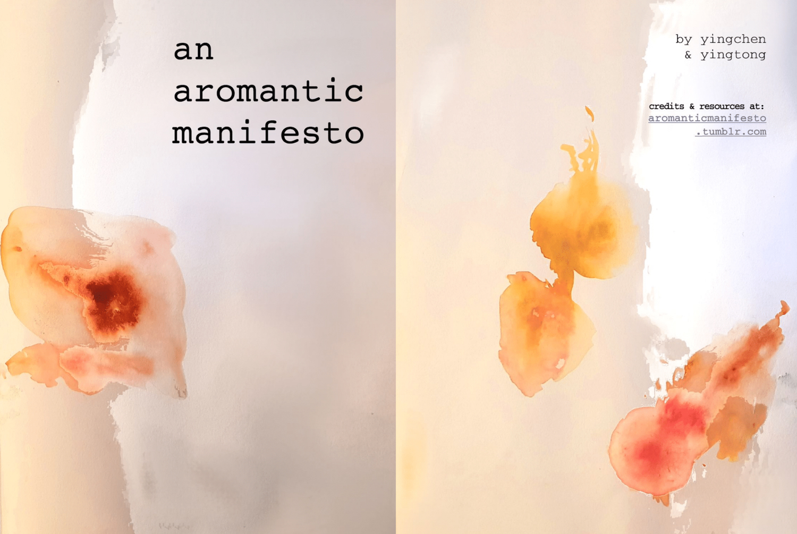
yingcheng & yingtong, an aromantic manifesto, 2018
⋈⊛⋈⊛⋈⊛⋈⊛⋈⊛⋈⊛⋈⊛⋈⊛
Studio 6
April 1, 2019
CHOREOGRAPHY OF RESISTANCE
How do we push our own work into movement and dialogue with power structures?
CLASS VISIT to meet with RISD Archivist Andy Martinez (Fleet Library, 2nd floor)
Review—exercise 5
Workshop 6—make a series of demands
Exercise 6 PROPOSAL (due at studio 7)—Create a 2-part proposal / Part 1: how do you extend the methodologies we’re exploring in this studio into your own practice? what kinds of adjustments or shifts or larger moves are needed? Part 2: how should we collectively produce / publish / stage the output of this studio?
⋈⊛⋈⊛⋈⊛⋈⊛⋈⊛⋈⊛⋈⊛⋈⊛
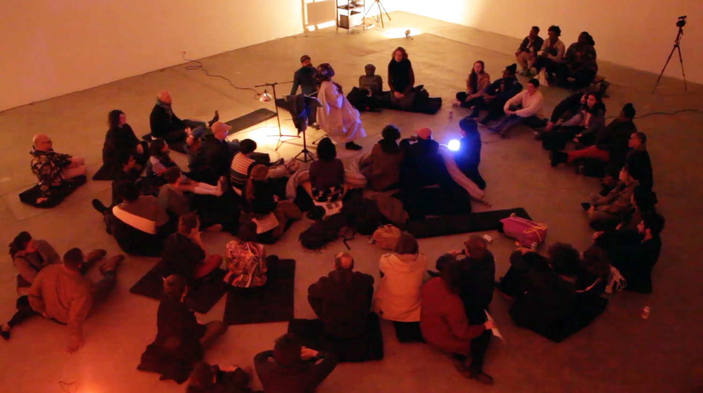
Autumn Knight, YES + NO: A CULT @ HUMAN RESOURCES LOS ANGELES, 2019
♢
Studio 7
April 8, 2019
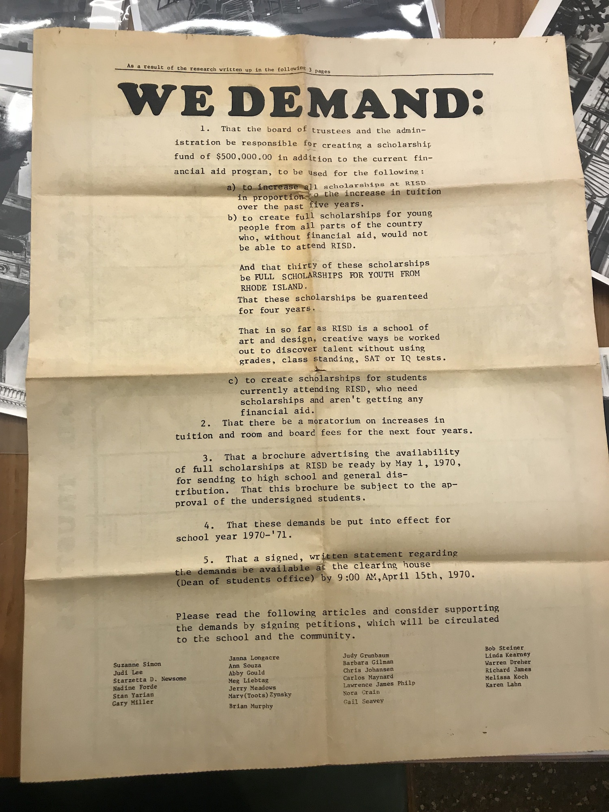
RISD Student Newspaper, March 23, 1970 (Photo: Elaine Lopez)
♢
Studio 8
April 15, 2019
♢
Studio 9
April 22, 2019
♢
Studio 10
April 29, 2019
♢
Studio 11
May 6, 2019
♢
Studio 12
May 13, 2019
Final studio event
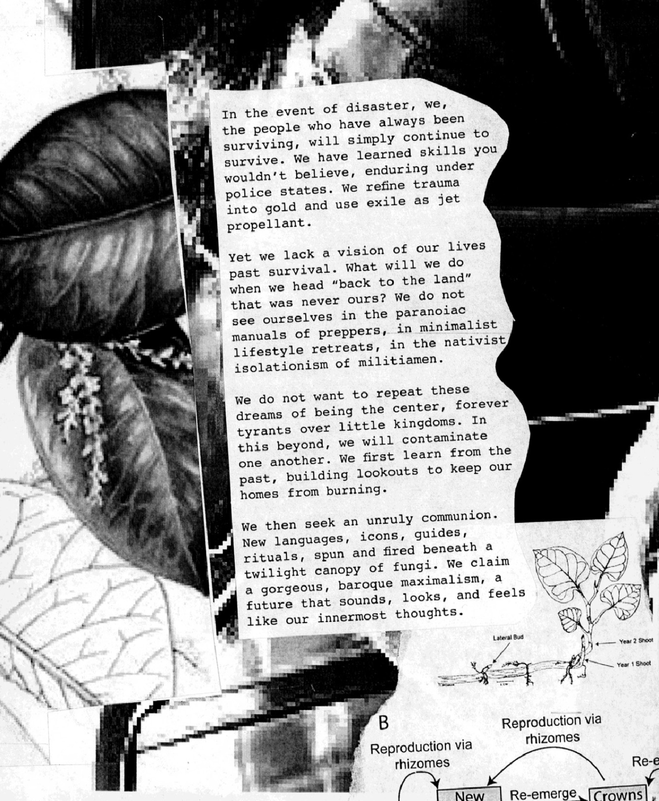
American Artist, Caitlin Cherry, Nora N. Khan and Sondra Perry, A Wild Ass Beyond: ApocalypseRN zine
Semester-long responsibilities
- Participation, discussion, and feedback in studio
- Finished work, process, and documentation for each exercise
- Finished work, process, and documentation for a final project
- For the studio as a whole: research, discourse, and work published or disseminated in some form
Attendance
- Please arrive on time for each studio.
- If you need to miss a studio, please get in touch as soon as you can to let me know.
- RISD policy is that three unexcused absences will result in failure of the course.
Grading
I use this rubric for grading—
- Contribution
(Attendance, participation, motivation, and personal commitment)
- Inquiry
(Search, research, study, and networking of knowledge and insights)
- Depth
(Attention to the quality of ideas, critical thought, and authenticity and voice)
- Breadth
(Range of experience, willingness to experiment, take risks, and broaden horizons)
- Finish
(Demonstration of skills in craft, visual design, presentation, and communication)
Inclusivity
It is my intent that students from all diverse backgrounds and perspectives be well-served by this course, that students’ needs be addressed both in and out of the class, and that the diversity that students bring to this studio be viewed as a resource, strength, and benefit. I will present materials that are respectful of a diversity of identities: gender, sexual orientation, disability, age, socioeconomic status, ethnicity, race, culture, perspective, and other characteristics. Your suggestions about how to improve the value of diversity in this course are encouraged and appreciated. Please let me know ways to improve the effectiveness of the course for you personally or for other students or student groups.
Influence
During the course of your work at RISD you will experience a range of opportunities to be inspired and influenced by other designers and artists. While plagiarism with the goal of deception will not be tolerated, it is normal to explore the work of others in new and original ways, and to express that influence through a variety of techniques—including homage, parody, style, derivation, and appropriation. I expect students (and faculty) to maintain an open perspective towards these concepts, and to use my studio as a safe testing ground for exploring influence, with the guidance of faculty. For more information, please see John Caserta’s “It’s probably not plagiarism,” as well as RISD policies on academic misconduct detailed on page 25 of the Course Announcement book.
#gender
#race
#power
#bias
#safety
#privacy
#privilege
#resistance
#climate change
#algorithmic control
#authority
#violence
#terror
#trauma
#human rights
#migration
#identity politics
#geo-politics
#postcolonial nationality
#representation
#protest
#whistleblower
#peer-2-peer
#mixed reality
#decentralization
#decolonization
#intersectionality
#failure and refutation
One must continue to work for the possibility of a poetry of the future.
Gayatri Chakravorty Spivak
Back to top
Patricia Okoumou, Statue of Liberty, July 4, 2018
Spring 2019
GRAPH-2109-01
Instructor: Paul Soulellis
Location: Design Center 404
Mondays 1:10pm–6:10pm
Course overview
How do we address what’s truly urgent today? Urgent for whom? Crisis conditions have infused every aspect of culture and society with doubt, but the role and efficacy of art and design as a means for change is still debated. We’ll begin this studio course by defining what Urgency Lab is on our own terms, casting a wide view towards climate, gender, race, and oppression. Can artists and designers loosen hegemonic power? We’ll engage with a range of voices for guidance and inspiration through weekly studio visits and readings, both within and outside of art and design discourse, with a particular emphasis on queer methodologies and historically marginalized perspectives. We’ll draw upon Fred Moten and Stefano Harney’s concept of the undercommons as a way to imagine our own position within an institutional context, and as the course develops we’ll build an “urgency platform”—a network of tools, references, modalities, and scenarios—to help us speculate, imagine, and articulate a more just futurity.
What is urgent craft? The semester will be devoted to exploring how legacy art and design techniques might be subverted (altered, manipulated, destroyed) to produce new, non-normative forms. Urgency Lab will be a collaboratively designed space, so determining the studio’s criteria, scope, and output as a group will itself be an experiment in collective, peer-to-peer making as an act of resistance. Working in public, radical acts of publishing, research-based exploration, rapid prototyping, non-traditional tools and platforms, and experimentation will be encouraged.
Learning goals
— Develop collaborative strategies for transforming group dynamics into a safe space for experimental making, discourse, and critique
— Explore contemporary theories around queering, decolonizing, and other non-normative methodologies in relation to art and design, and work to interpret these ideas into the studio
— Experiment with non-normative techniques for making art and design like (but not limited to) disruption, collective action, generosity, withdrawal, failure, and refusal
— Experiment with new forms of disseminating, publishing, and distributing our work
— Experiment with radical acts of generosity inside and outside the studio space
— Explore different modes of sharing and exchanging ideas within the studio
Scaffolding
1 LOCATION / SPECULATION
2 COLLECTIVE CARE
3 URGENT CRAFT
4 POWER / EXCHANGE
5 SLOWNESS, COMPLAINT, EXHAUSTION, REFUSAL
6 CHOREOGRAPHY OF RESISTANCE
Studio structure
Let’s allow our studio to shift and morph as the semester progresses, based on your collective participation and feedback. To get started we’ll use the proposed scaffolding (as loose navigation). Studio time will be devoted to various combinations of workshops, exercises, readings, discussions, group project reviews, and other kinds of events (artist visits, field trips). I’m open to experimenting with format, new scaffolding structures, and collaboratively re-writing this syllabus as the studio progresses!
Readings
- Sara Ahmed, “Strategic Inefficiency” (2018)
- American Artist, “Failure and Markup Language: Remembering Sandra Bland,” GenderFail: An Anthology of Failure (2018)
- American Artist, Caitlin Cherry, Nora N. Khan, Sondra Perry, A Wild Ass Beyond: ApocalypseRN zine (2018)
- Sasha Costanza-Chock, “Design Justice, AI, and Escape from the Matrix of Domination” in GenderFail: An Anthology of Failure (2018)
- Laboria Cuboniks, “Xenofeminism: A Politics for Alienation” (2018)
- Demian DinéYazhi´, AN INFECTED SUNSET (2018)
- Andrea Fraser, 2016 in Museums, Money, and Politics (2018)
- Interview with Andrea Fraser and Helen Molesworth, Bomb Magazine (2018)
- Reina Gossett, Eric A. Stanley, Johanna Burton (ed), Trap Door: Trans Cultural Production and the Politics of Visibility (2018)
- Alexis Pauline Gumbs, “We Can Learn to Mother Ourselves: The Queer Survival of Black Feminism 1968–1996” (2010)
- Jack Halberstam, The Queer Art of Failure (2012)
- Nicole Killian, “What Does Queering Education Actually Look Like in Practice?” (2019)
- Lucy Lippard, “Time Capsule” (2007)
- Audre Lorde, The Master’s Tools Will Never Dismantle the Master’s House (1978)
- Audre Lorde, “A Litany for Survival” (1978)
- Fred Moten and Stefano Harney, The Undercommons: Fugitive Planning & Black Study (2013)
- Nate Pyper, I Take the Sign with Me (2018)
- Simon Sheikh, “Circulation and Withdrawal” Parts 1 & 2, e-flux (2015)
- Roseanne Somerson, “reflect on issues of gun violence by making an object, text or image” (2018)
- Astra Taylor, “Against Activism” (2016)
- McKenzie Wark, “A Billion Black Anthropocenes,” book review (2019)
- Stephen Wright, Toward a Lexicon of Usership (2013)
- yingchen & yingtong, “an aromantic manifesto” (2018)
Calendar
☃☍☃☍☃☍☃☍☃☍☃☍☃
Studio 1
February 18, 2019
LOCATION / SPECULATION
Introduction and orientation: Where are we?
Warm-up & workshop 1—1918/2118 (RISD Museum & studio)
Exercise 1 COLLECTIVE ACTION (due at studio 2)—Bring a multiple to share with the group [☆inspired by Nicole Killian’s mediums mis-use studio at VCU☆]
☃☍☃☍☃☍☃☍☃☍☃☍☃
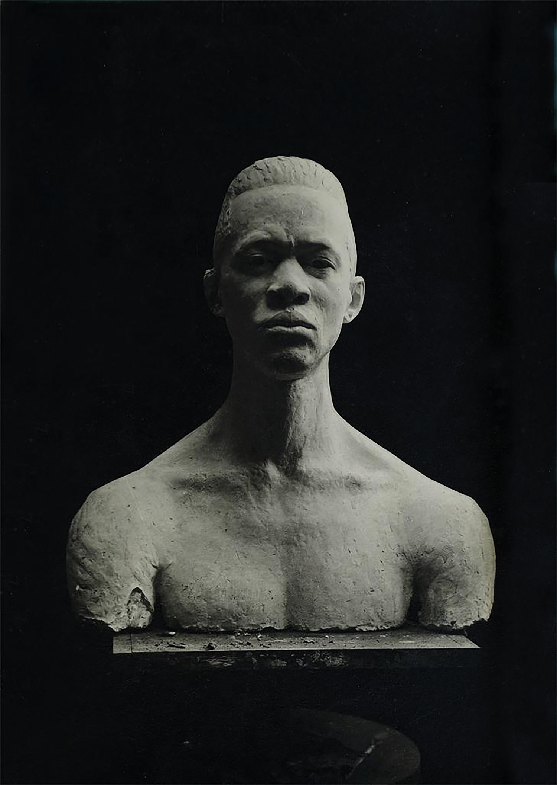
Nancy Elizabeth Prophet, photograph of a sculpture, 1923
☓∞☓∞☓∞☓∞☓∞☓∞☓∞☓∞☓
Studio 2
February 25, 2019
COLLECTIVE CARE
What do we need?
Review—exercise 1
Workshop 2—re-write our syllabus
Exercise 2 FAILURE (due at studio 3)—Prepare a response to the two readings so far (Undercommons & Queer Art of Failure) and present to the group
☓∞☓∞☓∞☓∞☓∞☓∞☓∞☓∞☓
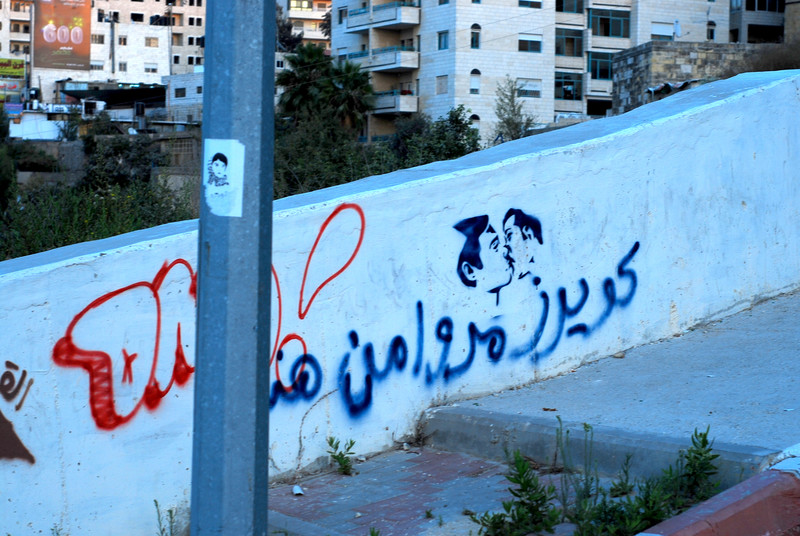
Graffiti in Ramallah: “Queers passed through here.”
☺☽☺☽☺☽☺☽☺☽☺☽☺☽☺☽☺☽☺☽☺
Studio 3
March 4, 2019
URGENT CRAFT
What is it?
Review—exercise 2
Workshop 3—towards a definition of urgency and urgent craft
Exercise 3 COMMUNITY (due at studio 4)—Perform and document an act of generosity outside the studio
☺☽☺☽☺☽☺☽☺☽☺☽☺☽☺☽☺☽☺☽☺
RAFiA, #PAYBLACKTIME, 2016–ongoing
♢⊹♢⊹♢⊹♢⊹♢⊹♢⊹♢⊹♢⊹
Studio 4
March 11, 2019
POWER / EXCHANGE
How do we even map power?
GUEST ARTIST CHAT: Autumn Knight
Review—exercise 3
Workshop 4—mapping power
Exercise 4 COLLECTIVE MAKING (due at studio 5)—In small groups, create an artifact that responds to an act of power/injustice and share with the studio; the artifact should be made by all members of the group together and should bear traces of your collective making
♢⊹♢⊹♢⊹♢⊹♢⊹♢⊹♢⊹♢⊹
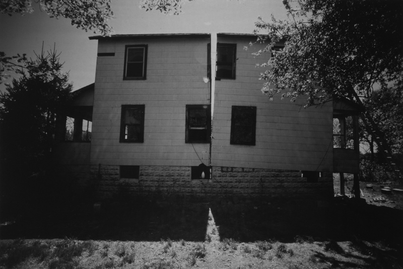
Gordon Matta-Clark, Splitting, 1974
♘♘♘♘♘♘♘♘♘♘♘♘♘
Studio 5
March 18, 2019
SLOWNESS, COMPLAINT, EXHAUSTION, REFUSAL
What does it mean to leave the site of power?
Review—exercise 4
Workshop 5—refusal & withdrawal (and the power of collective publishing)
Exercise 5 COLLECTIVE ACTION (AGAIN) (due at studio 6)—Prepare a multiple for the group, to be shared after the break
♘♘♘♘♘♘♘♘♘♘♘♘♘
☡☡☡☡☡☡ Week of March 25 SPRING BREAK ☡☡☡☡☡☡
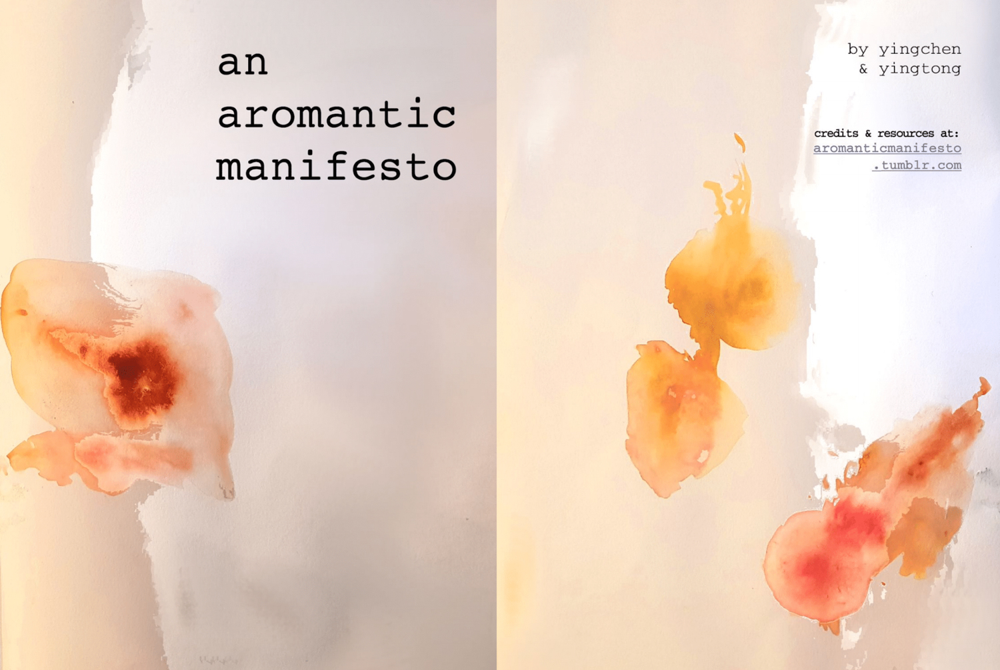
yingcheng & yingtong, an aromantic manifesto, 2018
⋈⊛⋈⊛⋈⊛⋈⊛⋈⊛⋈⊛⋈⊛⋈⊛
Studio 6
April 1, 2019
CHOREOGRAPHY OF RESISTANCE
How do we push our own work into movement and dialogue with power structures?
CLASS VISIT to meet with RISD Archivist Andy Martinez (Fleet Library, 2nd floor)
Review—exercise 5
Workshop 6—make a series of demands
Exercise 6 PROPOSAL (due at studio 7)—Create a 2-part proposal / Part 1: how do you extend the methodologies we’re exploring in this studio into your own practice? what kinds of adjustments or shifts or larger moves are needed? Part 2: how should we collectively produce / publish / stage the output of this studio?
⋈⊛⋈⊛⋈⊛⋈⊛⋈⊛⋈⊛⋈⊛⋈⊛
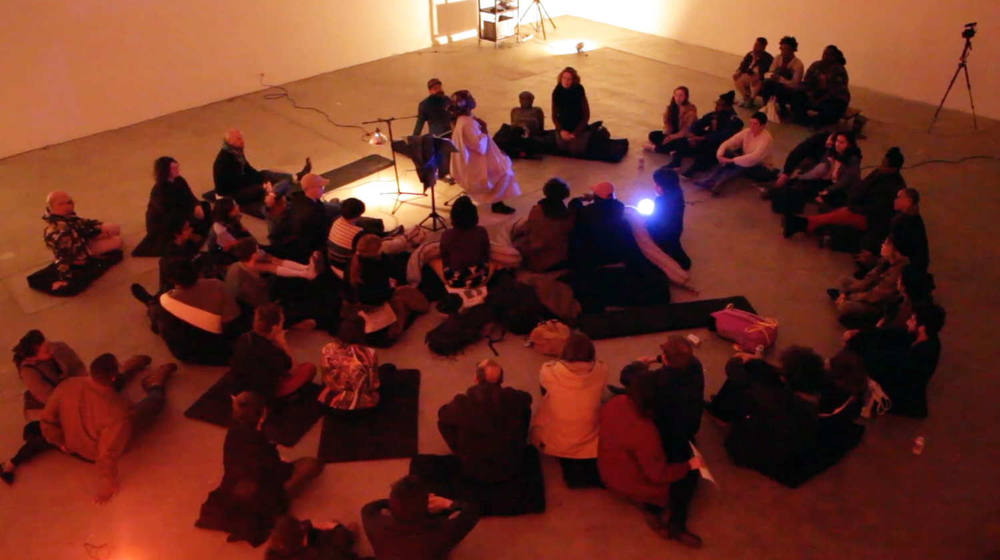
Autumn Knight, YES + NO: A CULT @ HUMAN RESOURCES LOS ANGELES, 2019
♢
Studio 7
April 8, 2019
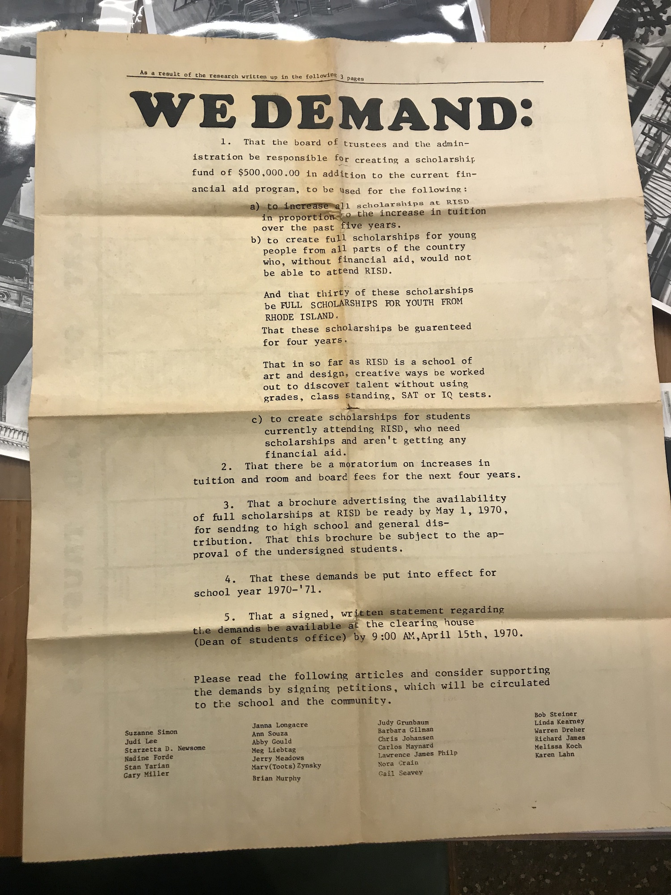
RISD Student Newspaper, March 23, 1970 (Photo: Elaine Lopez)
♢
Studio 8
April 15, 2019
♢
Studio 9
April 22, 2019
♢
Studio 10
April 29, 2019
♢
Studio 11
May 6, 2019
♢
Studio 12
May 13, 2019
Final studio event
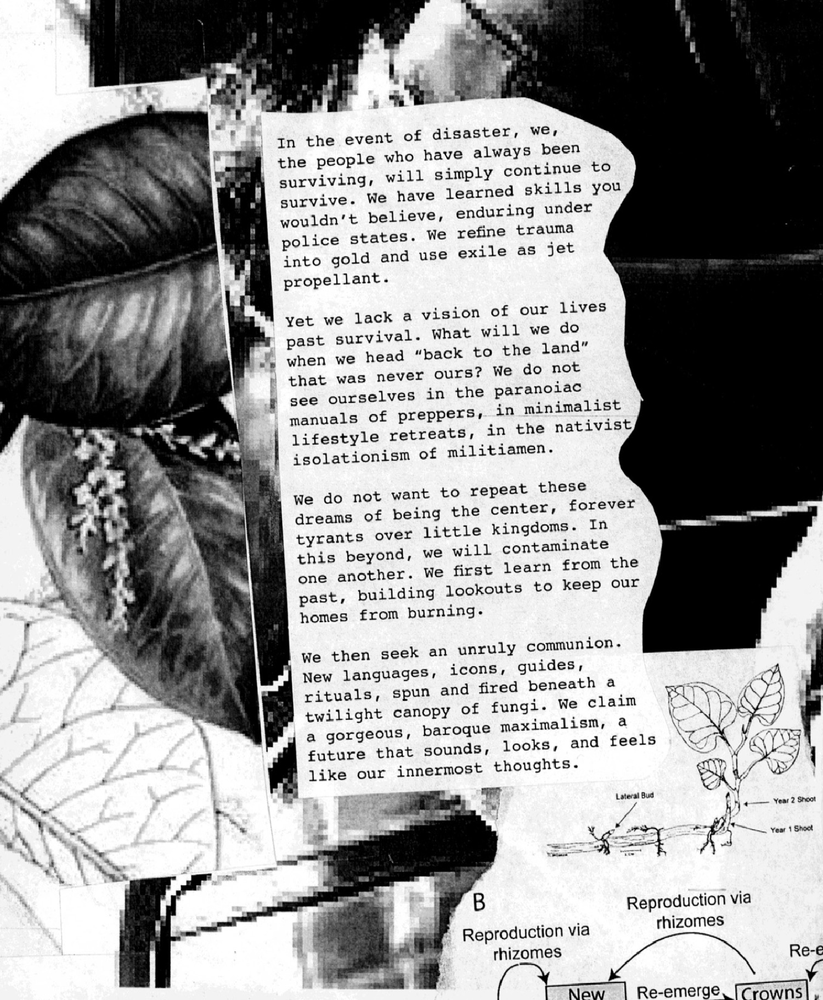